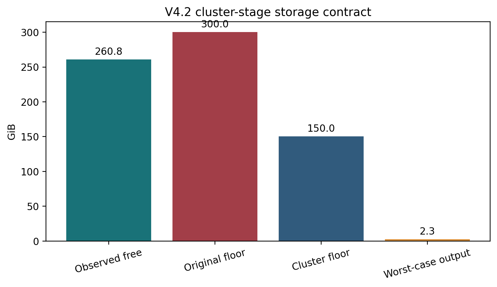

PASS_REVIEW_REQUIRED. Sparse staging and A100 scVI fitting completed under the original 300 GiB SSD floor. RAPIDS clustering did not start because an unrelated shared-SSD BAM sort reduced free space. After that process completed and self-cleaned, free space stabilized at 260.8 GiB.
The amendment retains 300 GiB for prepare and
fit, and freezes 150 GiB for
cluster and consensus. This is an operational
storage guard only. It does not change cells, HVGs, expression, scVI
parameters, latent coordinates, clustering grids, random seeds, anchors,
pseudo-label rules, or validation roles.

| check | status | detail |
|---|---|---|
| prepare_passed | PASS | /home/tanlikai/databank/publicdata/tools/output_geo_tcell_research/Integrated_dataset/logs/gdT_prediction/gdtai_v4_2_nk_reference/prepare_summary.json |
| fit_passed | PASS | /home/tanlikai/databank/publicdata/tools/output_geo_tcell_research/Integrated_dataset/logs/gdT_prediction/gdtai_v4_2_nk_reference/fit_summary.json |
| staged_h5ad_present | PASS | /ssd/tnk_phase3/Integrated_dataset/gdtai_v4_2_nk_reference/development_hvg_counts.h5ad |
| staged_h5ad_sha256 | PASS | cbd6d60f919fd235d578fe5423a0b19134e7447ab36bec231dcc064976e0aa9d |
| staged_shape | PASS | (4023462, 4000) |
| staged_sparse_csr | PASS | csr_matrix |
| staged_nnz | PASS | 1667132819 nnz |
| locked_cohorts_absent | PASS | prepare summary false |
| latent_present | PASS | /ssd/tnk_phase3/Integrated_dataset/gdtai_v4_2_nk_reference/X_scVI.npy |
| latent_sha256 | PASS | 7030b28be885b85a4b24ce2223bb16f7c7288a29195f2512bf7bbba330791ccf |
| latent_shape_and_finite | PASS | shape=(4023462, 30); finite=True |
| gpu_without_cpu_fallback | PASS | NVIDIA A100 80GB PCIe |
| scvi_model_present | PASS | /ssd/tnk_phase3/Integrated_dataset/gdtai_v4_2_nk_reference/scvi_model/model.pt |
| clustering_not_started | PASS | /ssd/tnk_phase3/Integrated_dataset/gdtai_v4_2_nk_reference/cluster_partitions.npz |
| source_h5ads_unchanged | PASS | 6/6 |
| stage_specific_floor_preserves_original_fit_floor | PASS | prepare/fit=300.0 GiB |
| cluster_floor_met | PASS | free=260.8; floor=150.0 GiB |
| cluster_output_reserve_met | PASS | post-reserve margin=108.4 GiB |
Activating CLUSTER_EXECUTION_APPROVAL.json authorizes
only the already approved RAPIDS repeated clustering and pseudo-NK
consensus QC using the saved staged H5AD and latent representation. It
does not authorize re-staging, re-fitting scVI, classifier fitting,
threshold selection, promotion, release fitting, or atlas inference.
Integrated_dataset/tables/gdT_prediction/gdtai_v4_2_cluster_resource_preflight/resource_amendment_checks.csvIntegrated_dataset/logs/gdT_prediction/gdtai_v4_2_cluster_resource_preflight/CLUSTER_EXECUTION_APPROVAL_TEMPLATE.jsongdT_prediction/gdtai_v4_2_cluster_resource_preflight/index.htmlgdT_prediction/gdtai_v4_2_cluster_resource_preflight/gdtai_v4_2_cluster_resource_preflight_report.pdf